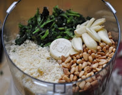

Home
Nettle Pesto
A beautiful and rich pesto for use as a spread on rosemary bread or fillet of fish. Your choice. Care should be taken when harvesting the nettle. Tender shoots can be harvested in the spring and frozen indefinitely for use at any time of the year.
Ingredients
- 2 cups stinging nettles, blanched and chopped (figure 6 cups raw)
- 1/2 cup Parmesan
- 1/2 cup pine nuts, roasted
- 4-5 large garlic cloves, peeled
- 1/2 cup olive oil
- 1 tbsp lemon juice

Directions
- Blanche nettles for a minute in boiling water. Remove to a salad spinner and shake off excess water, then ball up your nettles and give one good squeeze to wring out more water. It's tough to watch all that dark green, nutrient-laden liquid vanish down the drain, but you'll want olive oil lubricating your pesto, not water.
- Add nettles to food processor, along with roasted pine nuts (or walnuts, if you prefer), grated parmesan, garlic cloves, lemon juice, and seasoning. Pour half of the olive oil in and...Whirrrr. Pour the rest of the oil in. Whir again, until your preferred consistency. That's it.
This recipe makes a fairly pasty pesto; if you want something a little more spreadable for bread, sammiches, etc., try using more olive oil.